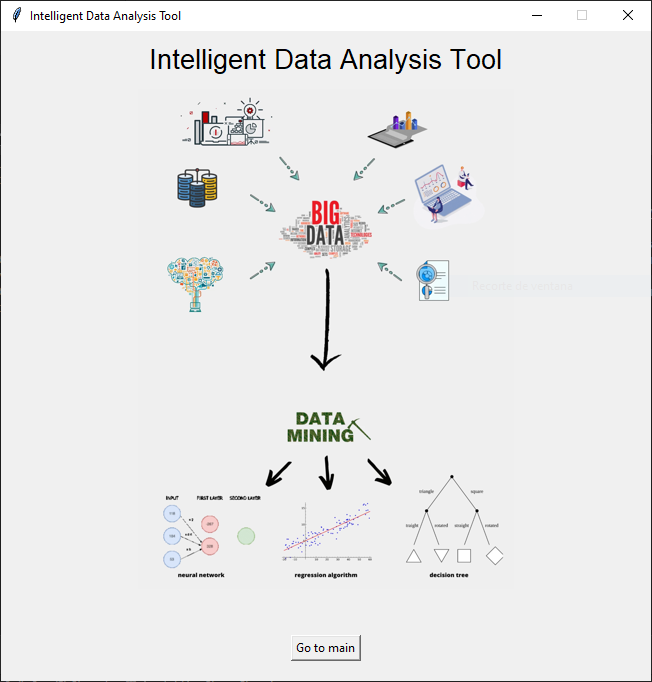
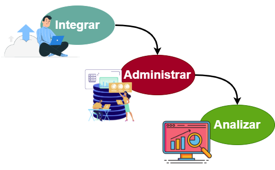

Descarga de la aplicación
La aplicación busca brindarte funcionalidades para realizar minería de datos.
Repositorio UCI Machine Learning
Sitio web que contiene una gran cantidad de bases de datos de diversas áreas.

Documentación para minería de datos
Código libre
Buscamos brindar una herramienta intuitiva para que usuarios de diversas áreas tengan la capacidad de utilizarla. Por otra parte, brindamos acceso al código de la aplicación para que los usuarios tengan la capacidad de integrar sus propias funcionalidades según sus necesidades.

¿Qué podemos hacer?
Basándonos en la metodología CRISP-DM se permite por medio de la herramienta llevar acabo las diversas fases de dicha metodología.
- Comprensión del dominio del problema
- Comprensión de los datos
- Preparación de los datos
- Modelado
- Evaluación de los modelos

Técnicas de modelado
La herramienta cuenta con diversos tipos de modelado, como:
- Red Neuronal Artificial
- Árboles de decisión
- Algoritmos de regresión
- Álgoritmo de K vecinos más cercanos
Esto para que el usuario determine el modelo más adecuado según el problema que esté trabajando.